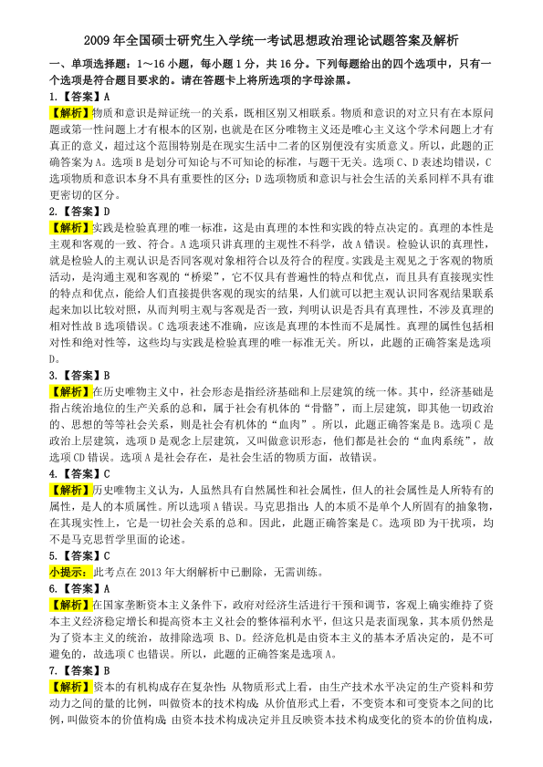
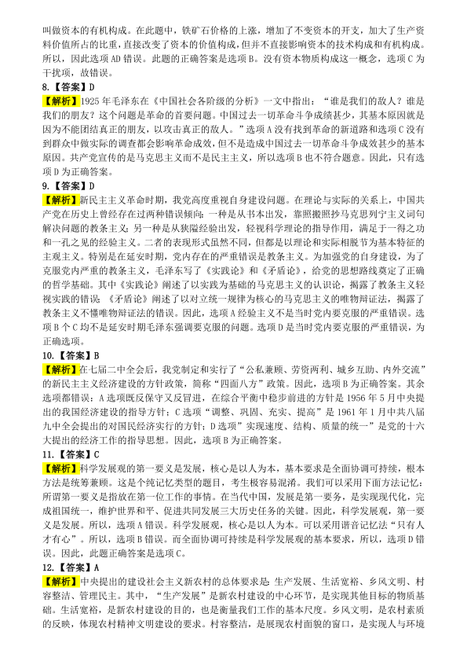
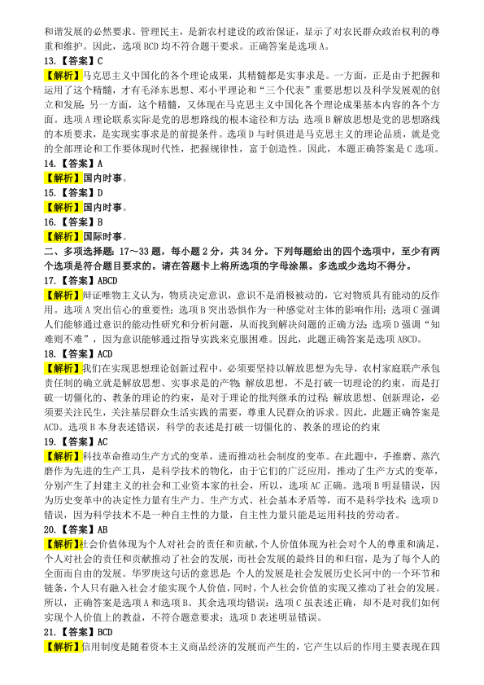
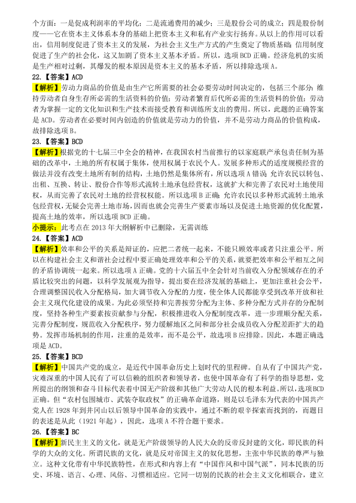
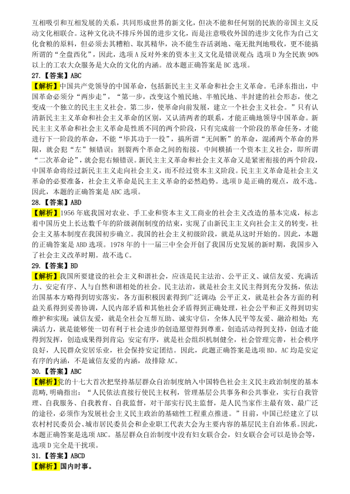
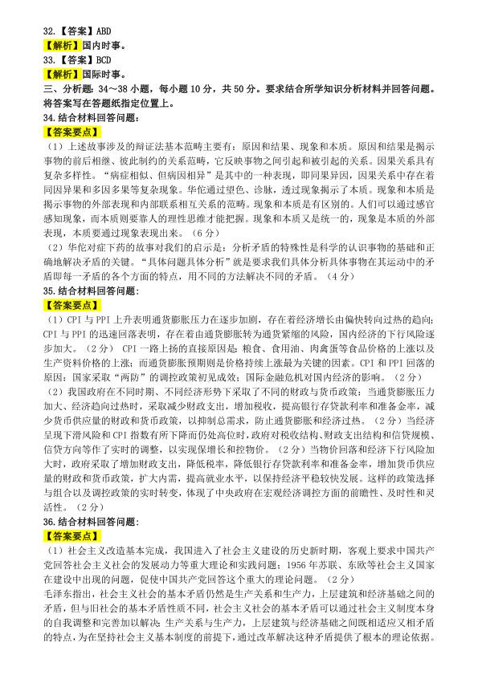
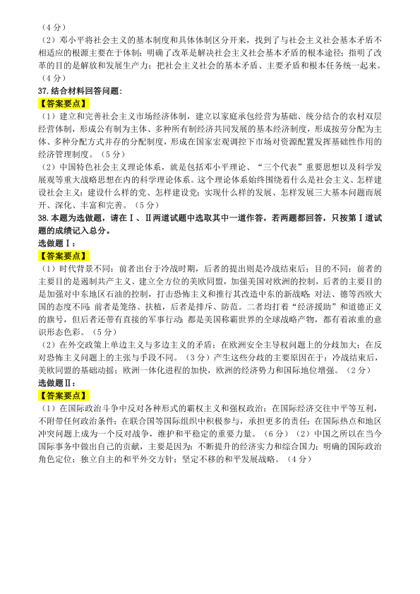

第 1 / 7 页

2009 年全国硕士研究生入学统一考试思想政治理论试题答案及解析
一、单项选择题：1～16 小题，每小题1 分，共16 分。下列每题给出的四个选项中，只有一
个选项是符合题目要求的。请在答题卡上将所选项的字母涂黑。
1.【答案】A
【解析】物质和意识是辩证统一的关系，既相区别又相联系。物质和意识的对立只有在本原问
题或第一性问题上才有根本的区别，也就是在区分唯物主义还是唯心主义这个学术问题上才有
真正的意义，超过这个范围特别是在现实生活中二者的区别便没有实质意义。所以，此题的正
确答案为A。选项B 是划分可知论与不可知论的标准，与题干无关。选项C、D 表述均错误，C
选项物质和意识本身不具有重要性的区分；D 选项物质和意识与社会生活的关系同样不具有谁
更密切的区分。
2.【答案】D
【解析】实践是检验真理的唯一标准，这是由真理的本性和实践的特点决定的。真理的本性是
主观和客观的一致、符合。A 选项只讲真理的主观性不科学，故A 错误。检验认识的真理性，
就是检验人的主观认识是否同客观对象相符合以及符合的程度。实践是主观见之于客观的物质
活动，是沟通主观和客观的“桥梁”，它不仅具有普遍性的特点和优点，而且具有直接现实性
的特点和优点，能给人们直接提供客观的现实的结果，人们就可以把主观认识同客观结果联系
起来加以比较对照，从而判明主观与客观是否一致，判明认识是否具有真理性，不涉及真理的
相对性故B 选项错误。C 选项表述不准确，应该是真理的本性而不是属性。真理的属性包括相
对性和绝对性等，这些均与实践是检验真理的唯一标准无关。所以，此题的正确答案是选项
D。
3.【答案】B
【解析】在历史唯物主义中，社会形态是指经济基础和上层建筑的统一体。其中，经济基础是
指占统治地位的生产关系的总和，属于社会有机体的“骨骼”，而上层建筑，即其他一切政治
的、思想的等等社会关系，则是社会有机体的“血肉”。所以，此题正确答案是B。选项C 是
政治上层建筑，选项D 是观念上层建筑，又叫做意识形态，他们都是社会的“血肉系统”，故
选项CD 错误。选项A 是社会存在，是社会生活的物质方面，故错误。
4.【答案】C
【解析】历史唯物主义认为，人虽然具有自然属性和社会属性，但人的社会属性是人所特有的
属性，是人的本质属性。所以选项A 错误。马克思指出：人的本质不是单个人所固有的抽象物，
在其现实性上，它是一切社会关系的总和。因此，此题正确答案是C。选项BD 为干扰项，均
不是马克思哲学里面的论述。
5.【答案】C
小提示：此考点在2013 年大纲解析中已删除，无需训练。
6.【答案】A
【解析】在国家垄断资本主义条件下，政府对经济生活进行干预和调节，客观上确实维持了资
本主义经济稳定增长和提高资本主义社会的整体福利水平，但这只是表面现象，其本质仍然是
为了资本主义的统治，故排除选项 B、D。经济危机是由资本主义的基本矛盾决定的，是不可
避免的，故选项C 也错误。所以，此题的正确答案是选项A。
7.【答案】B
【解析】资本的有机构成存在复杂性：从物质形式上看，由生产技术水平决定的生产资料和劳
动力之间的量的比例，叫做资本的技术构成；从价值形式上看，不变资本和可变资本之间的比
例，叫做资本的价值构成；由资本技术构成决定并且反映资本技术构成变化的资本的价值构成，
查看 / 复制本页文字
2009 年全国硕士研究生入学统一考试思想政治理论试题答案及解析 一、单项选择题：1～16 小题，每小题1 分，共16 分。下列每题给出的四个选项中，只有一 个选项是符合题目要求的。请在答题卡上将所选项的字母涂黑。 1.【答案】A 【解析】物质和意识是辩证统一的关系，既相区别又相联系。物质和意识的对立只有在本原问 题或第一性问题上才有根本的区别，也就是在区分唯物主义还是唯心主义这个学术问题上才有 真正的意义，超过这个范围特别是在现实生活中二者的区别便没有实质意义。所以，此题的正 确答案为A。选项B 是划分可知论与不可知论的标准，与题干无关。选项C、D 表述均错误，C 选项物质和意识本身不具有重要性的区分；D 选项物质和意识与社会生活的关系同样不具有谁 更密切的区分。 2.【答案】D 【解析】实践是检验真理的唯一标准，这是由真理的本性和实践的特点决定的。真理的本性是 主观和客观的一致、符合。A 选项只讲真理的主观性不科学，故A 错误。检验认识的真理性， 就是检验人的主观认识是否同客观对象相符合以及符合的程度。实践是主观见之于客观的物质 活动，是沟通主观和客观的“桥梁”，它不仅具有普遍性的特点和优点，而且具有直接现实性 的特点和优点，能给人们直接提供客观的现实的结果，人们就可以把主观认识同客观结果联系 起来加以比较对照，从而判明主观与客观是否一致，判明认识是否具有真理性，不涉及真理的 相对性故B 选项错误。C 选项表述不准确，应该是真理的本性而不是属性。真理的属性包括相 对性和绝对性等，这些均与实践是检验真理的唯一标准无关。所以，此题的正确答案是选项 D。 3.【答案】B 【解析】在历史唯物主义中，社会形态是指经济基础和上层建筑的统一体。其中，经济基础是 指占统治地位的生产关系的总和，属于社会有机体的“骨骼”，而上层建筑，即其他一切政治 的、思想的等等社会关系，则是社会有机体的“血肉”。所以，此题正确答案是B。选项C 是 政治上层建筑，选项D 是观念上层建筑，又叫做意识形态，他们都是社会的“血肉系统”，故 选项CD 错误。选项A 是社会存在，是社会生活的物质方面，故错误。 4.【答案】C 【解析】历史唯物主义认为，人虽然具有自然属性和社会属性，但人的社会属性是人所特有的 属性，是人的本质属性。所以选项A 错误。马克思指出：人的本质不是单个人所固有的抽象物， 在其现实性上，它是一切社会关系的总和。因此，此题正确答案是C。选项BD 为干扰项，均 不是马克思哲学里面的论述。 5.【答案】C 小提示：此考点在2013 年大纲解析中已删除，无需训练。 6.【答案】A 【解析】在国家垄断资本主义条件下，政府对经济生活进行干预和调节，客观上确实维持了资 本主义经济稳定增长和提高资本主义社会的整体福利水平，但这只是表面现象，其本质仍然是 为了资本主义的统治，故排除选项 B、D。经济危机是由资本主义的基本矛盾决定的，是不可 避免的，故选项C 也错误。所以，此题的正确答案是选项A。 7.【答案】B 【解析】资本的有机构成存在复杂性：从物质形式上看，由生产技术水平决定的生产资料和劳 动力之间的量的比例，叫做资本的技术构成；从价值形式上看，不变资本和可变资本之间的比 例，叫做资本的价值构成；由资本技术构成决定并且反映资本技术构成变化的资本的价值构成，
第 2 / 7 页

叫做资本的有机构成。在此题中，铁矿石价格的上涨，增加了不变资本的开支，加大了生产资
料价值所占的比重，直接改变了资本的价值构成，但并不直接影响资本的技术构成和有机构成。
所以，因此选项AD 错误。此题的正确答案是选项B。没有资本物质构成这一概念，选项C 为
干扰项，故错误。
8.【答案】D
【解析】1925 年毛泽东在《中国社会各阶级的分析》一文中指出：“谁是我们的敌人？谁是
我们的朋友？这个问题是革命的首要问题。中国过去一切革命斗争成绩甚少，其基本原因就是
因为不能团结真正的朋友，以攻击真正的敌人。”选项A 没有找到革命的新道路和选项C 没有
到群众中做实际的调查都会影响革命成效，但不是造成中国过去一切革命斗争成效甚少的基本
原因。共产党宣传的是马克思主义而不是民主主义，所以选项B 也不符合题意。因此，只有选
项D 为正确答案。
9.【答案】D
【解析】新民主主义革命时期，我党高度重视自身建设问题。在理论与实际的关系上，中国共
产党在历史上曾经存在过两种错误倾向：一种是从书本出发，靠照搬照抄马克思列宁主义词句
解决问题的教条主义；另一种是从狭隘经验出发，轻视科学理论的指导作用，满足于一得之功
和一孔之见的经验主义。二者的表现形式虽然不同，但都是以理论和实际相脱节为基本特征的
主观主义。特别是在延安时期，党内存在的严重错误是教条主义。为加强党的自身建设，为了
克服党内严重的教条主义，毛泽东写了《实践论》和《矛盾论》，给党的思想路线奠定了正确
的哲学基础。其中《实践论》阐述了以实践为基础的马克思主义的认识论，揭露了教条主义轻
视实践的错误；《矛盾论》阐述了以对立统一规律为核心的马克思主义的唯物辩证法，揭露了
教条主义不懂唯物辩证法的错误。因此，选项A 经验主义不是当时党内要克服的严重错误。选
项B 个C 均不是延安时期毛泽东强调要克服的问题。选项D 是当时党内要克服的严重错误，为
正确选项。
10.【答案】B
【解析】在七届二中全会后，我党制定和实行了“公私兼顾、劳资两利、城乡互助、内外交流”
的新民主主义经济建设的方针政策，简称“四面八方”政策。因此，选项B 为正确答案。其余
选项都错误：A 选项既反保守又反冒进，在综合平衡中稳步前进的方针是1956 年5 月中央提
出的我国经济建设的指导方针；C 选项“调整、巩固、充实、提高”是1961 年1 月中共八届
九中全会提出的对国民经济实行的方针；D 选项”实现速度、结构、质量的统一”是党的十六
大提出的经济工作的指导思想。因此，选项B 为正确答案。
11.【答案】C
【解析】科学发展观的第一要义是发展，核心是以人为本，基本要求是全面协调可持续，根本
方法是统筹兼顾。这是个纯记忆类型的题目，考生极容易混淆。我们可以采用下面方法记忆：
所谓第一要义是指放在第一位工作的事情。在当代中国，发展是第一要务，是实现现代化，完
成祖国统一，维护世界和平、促进共同发展三大历史任务的关键。因此，科学发展观，第一要
义是发展。所以，选项A 错误。科学发展观，核心是以人为本。可以采用谐音记忆法“只有人
才有心”。所以，选项B 错误。而全面协调可持续是科学发展观的基本要求，所以，选项D 错
误。因此，此题正确答案是选项C。
12.【答案】A
【解析】中央提出的建设社会主义新农村的总体要求是：生产发展、生活宽裕、乡风文明、村
容整洁、管理民主。其中，“生产发展”是新农村建设的中心环节，是实现其他目标的物质基
础。生活宽裕，是新农村建设的目的，也是衡量我们工作的基本尺度。乡风文明，是农村素质
的反映，体现农村精神文明建设的要求。村容整洁，是展现农村面貌的窗口，是实现人与环境
查看 / 复制本页文字
叫做资本的有机构成。在此题中，铁矿石价格的上涨，增加了不变资本的开支，加大了生产资 料价值所占的比重，直接改变了资本的价值构成，但并不直接影响资本的技术构成和有机构成。 所以，因此选项AD 错误。此题的正确答案是选项B。没有资本物质构成这一概念，选项C 为 干扰项，故错误。 8.【答案】D 【解析】1925 年毛泽东在《中国社会各阶级的分析》一文中指出：“谁是我们的敌人？谁是 我们的朋友？这个问题是革命的首要问题。中国过去一切革命斗争成绩甚少，其基本原因就是 因为不能团结真正的朋友，以攻击真正的敌人。”选项A 没有找到革命的新道路和选项C 没有 到群众中做实际的调查都会影响革命成效，但不是造成中国过去一切革命斗争成效甚少的基本 原因。共产党宣传的是马克思主义而不是民主主义，所以选项B 也不符合题意。因此，只有选 项D 为正确答案。 9.【答案】D 【解析】新民主主义革命时期，我党高度重视自身建设问题。在理论与实际的关系上，中国共 产党在历史上曾经存在过两种错误倾向：一种是从书本出发，靠照搬照抄马克思列宁主义词句 解决问题的教条主义；另一种是从狭隘经验出发，轻视科学理论的指导作用，满足于一得之功 和一孔之见的经验主义。二者的表现形式虽然不同，但都是以理论和实际相脱节为基本特征的 主观主义。特别是在延安时期，党内存在的严重错误是教条主义。为加强党的自身建设，为了 克服党内严重的教条主义，毛泽东写了《实践论》和《矛盾论》，给党的思想路线奠定了正确 的哲学基础。其中《实践论》阐述了以实践为基础的马克思主义的认识论，揭露了教条主义轻 视实践的错误；《矛盾论》阐述了以对立统一规律为核心的马克思主义的唯物辩证法，揭露了 教条主义不懂唯物辩证法的错误。因此，选项A 经验主义不是当时党内要克服的严重错误。选 项B 个C 均不是延安时期毛泽东强调要克服的问题。选项D 是当时党内要克服的严重错误，为 正确选项。 10.【答案】B 【解析】在七届二中全会后，我党制定和实行了“公私兼顾、劳资两利、城乡互助、内外交流” 的新民主主义经济建设的方针政策，简称“四面八方”政策。因此，选项B 为正确答案。其余 选项都错误：A 选项既反保守又反冒进，在综合平衡中稳步前进的方针是1956 年5 月中央提 出的我国经济建设的指导方针；C 选项“调整、巩固、充实、提高”是1961 年1 月中共八届 九中全会提出的对国民经济实行的方针；D 选项”实现速度、结构、质量的统一”是党的十六 大提出的经济工作的指导思想。因此，选项B 为正确答案。 11.【答案】C 【解析】科学发展观的第一要义是发展，核心是以人为本，基本要求是全面协调可持续，根本 方法是统筹兼顾。这是个纯记忆类型的题目，考生极容易混淆。我们可以采用下面方法记忆： 所谓第一要义是指放在第一位工作的事情。在当代中国，发展是第一要务，是实现现代化，完 成祖国统一，维护世界和平、促进共同发展三大历史任务的关键。因此，科学发展观，第一要 义是发展。所以，选项A 错误。科学发展观，核心是以人为本。可以采用谐音记忆法“只有人 才有心”。所以，选项B 错误。而全面协调可持续是科学发展观的基本要求，所以，选项D 错 误。因此，此题正确答案是选项C。 12.【答案】A 【解析】中央提出的建设社会主义新农村的总体要求是：生产发展、生活宽裕、乡风文明、村 容整洁、管理民主。其中，“生产发展”是新农村建设的中心环节，是实现其他目标的物质基 础。生活宽裕，是新农村建设的目的，也是衡量我们工作的基本尺度。乡风文明，是农村素质 的反映，体现农村精神文明建设的要求。村容整洁，是展现农村面貌的窗口，是实现人与环境
第 3 / 7 页

和谐发展的必然要求。管理民主，是新农村建设的政治保证，显示了对农民群众政治权利的尊
重和维护。因此，选项BCD 均不符合题干要求。正确答案是选项A。
13.【答案】C
【解析】马克思主义中国化的各个理论成果，其精髓都是实事求是。一方面，正是由于把握和
运用了这个精髓，才有毛泽东思想、邓小平理论和“三个代表”重要思想以及科学发展观的创
立和发展；另一方面，这个精髓，又体现在马克思主义中国化各个理论成果基本内容的各个方
面。选项A 理论联系实际是党的思想路线的根本途径和方法；选项B 解放思想是党的思想路线
的本质要求，是实现实事求是的前提条件。选项D 与时俱进是马克思主义的理论品质，就是党
的全部理论和工作要体现时代性，把握规律性，富于创造性。因此，本题正确答案是C 选项。
14.【答案】A
【解析】国内时事。
15.【答案】D
【解析】国内时事。
16.【答案】B
【解析】国际时事。
二、多项选择题：17～33 题，每小题2 分，共34 分。下列每题给出的四个选项中，至少有两
个选项是符合题目要求的。请在答题卡上将所选项的字母涂黑。多选或少选均不得分。
17.【答案】ABCD
【解析】辩证唯物主义认为，物质决定意识，意识不是消极被动的，它对物质具有能动的反作
用。选项A 突出信心的重要性；选项B 突出恐惧作为一种感觉对主体的影响作用；选项C 强调
人们能够通过意识的能动性研究和分析问题，从而找到解决问题的正确方法；选项D 强调“知
难则不难”，因为意识能够通过指导实践来克服困难。因此，此题正确答案是选项ABCD。
18.【答案】ACD
【解析】我们在实现思想理论创新过程中，必须要坚持以解放思想为先导，农村家庭联产承包
责任制的确立就是解放思想、实事求是的产物；解放思想，不是打破一切理论的约束，而是打
破一切僵化的、教条的理论的约束，是对于理论的批判继承的过程；解放思想、创新理论，必
须要关注民生，关注基层群众生活实践的需要，尊重人民群众的诉求。因此，此题正确答案是
ACD。选项B 本身表述错误，科学的表述是打破一切僵化的、教条的理论的约束
19.【答案】AC
【解析】科技革命推动生产方式的变革，进而推动社会制度的变革。在此题中，手推磨、蒸汽
磨作为先进的生产工具，是科学技术的物化，由于它们的广泛应用，推动了生产方式的变革，
分别产生了封建主义的社会和工业资本家的社会，所以，选项AC 正确。选项B 明显错误，因
为历史变革中的决定性力量有生产力、生产方式、社会基本矛盾等，而不是科学技术；选项D
错误，因为科学技术不是一种自主性的力量，自主性力量只能是运用科技的劳动者。
20.【答案】AB
【解析】社会价值体现为个人对社会的责任和贡献，个人价值体现为社会对个人的尊重和满足，
个人对社会的责任和贡献推动了社会的发展，而社会发展的最终目的和归宿，是为了每个人的
全面而自由的发展。华罗庚这句话的意思是：个人的发展是社会发展历史长河中的一个环节和
链条，个人只有融入社会才能实现个人价值，同时，个人社会价值的实现又推动了社会的发展。
所以，正确答案是选项A 和选项B。其余选项均错误：选项C 虽表述正确，却不是对我们如何
实现个人价值上的教益，不符合题意要求；选项D 表述明显错误。
21.【答案】BCD
【解析】信用制度是随着资本主义商品经济的发展而产生的，它产生以后的作用主要表现在四
查看 / 复制本页文字
和谐发展的必然要求。管理民主，是新农村建设的政治保证，显示了对农民群众政治权利的尊 重和维护。因此，选项BCD 均不符合题干要求。正确答案是选项A。 13.【答案】C 【解析】马克思主义中国化的各个理论成果，其精髓都是实事求是。一方面，正是由于把握和 运用了这个精髓，才有毛泽东思想、邓小平理论和“三个代表”重要思想以及科学发展观的创 立和发展；另一方面，这个精髓，又体现在马克思主义中国化各个理论成果基本内容的各个方 面。选项A 理论联系实际是党的思想路线的根本途径和方法；选项B 解放思想是党的思想路线 的本质要求，是实现实事求是的前提条件。选项D 与时俱进是马克思主义的理论品质，就是党 的全部理论和工作要体现时代性，把握规律性，富于创造性。因此，本题正确答案是C 选项。 14.【答案】A 【解析】国内时事。 15.【答案】D 【解析】国内时事。 16.【答案】B 【解析】国际时事。 二、多项选择题：17～33 题，每小题2 分，共34 分。下列每题给出的四个选项中，至少有两 个选项是符合题目要求的。请在答题卡上将所选项的字母涂黑。多选或少选均不得分。 17.【答案】ABCD 【解析】辩证唯物主义认为，物质决定意识，意识不是消极被动的，它对物质具有能动的反作 用。选项A 突出信心的重要性；选项B 突出恐惧作为一种感觉对主体的影响作用；选项C 强调 人们能够通过意识的能动性研究和分析问题，从而找到解决问题的正确方法；选项D 强调“知 难则不难”，因为意识能够通过指导实践来克服困难。因此，此题正确答案是选项ABCD。 18.【答案】ACD 【解析】我们在实现思想理论创新过程中，必须要坚持以解放思想为先导，农村家庭联产承包 责任制的确立就是解放思想、实事求是的产物；解放思想，不是打破一切理论的约束，而是打 破一切僵化的、教条的理论的约束，是对于理论的批判继承的过程；解放思想、创新理论，必 须要关注民生，关注基层群众生活实践的需要，尊重人民群众的诉求。因此，此题正确答案是 ACD。选项B 本身表述错误，科学的表述是打破一切僵化的、教条的理论的约束 19.【答案】AC 【解析】科技革命推动生产方式的变革，进而推动社会制度的变革。在此题中，手推磨、蒸汽 磨作为先进的生产工具，是科学技术的物化，由于它们的广泛应用，推动了生产方式的变革， 分别产生了封建主义的社会和工业资本家的社会，所以，选项AC 正确。选项B 明显错误，因 为历史变革中的决定性力量有生产力、生产方式、社会基本矛盾等，而不是科学技术；选项D 错误，因为科学技术不是一种自主性的力量，自主性力量只能是运用科技的劳动者。 20.【答案】AB 【解析】社会价值体现为个人对社会的责任和贡献，个人价值体现为社会对个人的尊重和满足， 个人对社会的责任和贡献推动了社会的发展，而社会发展的最终目的和归宿，是为了每个人的 全面而自由的发展。华罗庚这句话的意思是：个人的发展是社会发展历史长河中的一个环节和 链条，个人只有融入社会才能实现个人价值，同时，个人社会价值的实现又推动了社会的发展。 所以，正确答案是选项A 和选项B。其余选项均错误：选项C 虽表述正确，却不是对我们如何 实现个人价值上的教益，不符合题意要求；选项D 表述明显错误。 21.【答案】BCD 【解析】信用制度是随着资本主义商品经济的发展而产生的，它产生以后的作用主要表现在四
第 4 / 7 页

个方面：一是促成利润率的平均化；二是流通费用的减少；三是股份公司的成立；四是股份制
度——它在资本主义体系本身的基础上把资本主义和私有产业实行扬弃。从以上的作用可以看
出，信用制度促进了资本主义的发展，为社会主义生产方式的产生奠定了物质基础；信用制度
促进了生产的社会化，这又加剧了资本主义基本矛盾。所以，选项BCD 正确。经济危机的实质
是生产相对过剩，其爆发的根本原因是资本主义的基本矛盾，所以排除选项A。
22.【答案】ACD
【解析】劳动力商品的价值是由生产它所需要的社会必要劳动时间决定的，包括三个部分：维
持劳动者自身生存所必需的生活资料的价值；劳动者繁育后代所必需的生活资料的价值；劳动
者为掌握一定的文化知识和生产技术而接受教育和训练所支出的费用。所以，此题的正确答案
是ACD。劳动者在必要时间内创造的价值就是劳动力的价值，并不是劳动力商品的价值构成，
故排除选项B。
23.【答案】BCD
【解析】根据党的十七届三中全会的精神，在我国农村当前推行的以家庭联产承包责任制为基
础的改革中，土地的所有权属于集体，使用权属于农民个人。发展多种形式的适度规模经营的
做法并没有改变土地所有制的结构，土地仍然是集体所有，所以选项A 错误；允许农民以转包、
出租、互换、转让、股份合作等形式流转土地承包经营权，这就扩大和完善了农民对土地使用
权，从而完善了农民对土地的经营权权能。所以选项B 正确；允许农民以多种形式流转土地承
包经营权，无疑会完善土地市场，因而也就会完善生产要素市场以及促进土地资源的优化配置，
提高土地的效率，所以选项BCD 正确。
小提示：此考点在2013 年大纲解析中已删除，无需训练
24.【答案】ACD
【解析】效率和公平的关系是辩证的，应把二者统一起来，不能只顾效率或者只注重公平。所
以在构建社会主义和谐社会过程中要正确处理效率和公平的关系，就要把效率和公平相互之间
的矛盾协调统一起来。所以选项A 正确。党的十六届五中全会针对当前收入分配领域存在的矛
盾比较突出的问题，以科学发展观为指导，提出要在经济发展的基础上，更加注重社会公平，
合理调整国民收入分配格局，加大调节收入分配的力度，使全体人民都能享受到改革开放和社
会主义现代化建设的成果。为此必须坚持和完善按劳分配为主体、多种分配方式并存的分配制
度，坚持各种生产要素按贡献参与分配，积极推进收入分配制度改革，进一步理顺分配关系，
完善分配制度，规范收入分配秩序，努力缓解地区之间和部分社会成员收入分配差距扩大的趋
势。发挥市场机制的作用，注重的是效率，而不是公平，故选项B 应排除。因此，本题正确选
项是ACD。
25.【答案】BCD
【解析】中国共产党的成立，是近代中国革命历史上划时代的里程碑。自从有了中国共产党，
灾难深重的中国人民有了可以信赖的组织者和领导者，也使中国革命有了科学的指导思想，党
所提出的纲领和奋斗目标代表着中国无产阶级和其他广大劳动人民的根本利益。所以，选项BCD
正确。但“农村包围城市、武装夺取政权”的正确革命道路，则是以毛泽东为代表的中国共产
党人在1928 年到井冈山以后领导中国革命的实践中，通过不断的艰辛探索而找到的，而题目
的表述是从此（1921 年起），因此，选项A 不符合题干要求。
26.【答案】BC
【解析】新民主主义的文化，就是无产阶级领导的人民大众的反帝反封建的文化，即民族的科
学的大众的文化。所谓民族的文化，就是反对帝国主义的奴化思想，主张中华民族的尊严与独
立。这种文化带有中华民族特性，在形式和内容上有“中国作风和中国气派”，同本民族的历
史、环境、语言、心理、风俗、习惯相适应。它同一切别的民族的社会主义文化相联合，建立
查看 / 复制本页文字
个方面：一是促成利润率的平均化；二是流通费用的减少；三是股份公司的成立；四是股份制 度——它在资本主义体系本身的基础上把资本主义和私有产业实行扬弃。从以上的作用可以看 出，信用制度促进了资本主义的发展，为社会主义生产方式的产生奠定了物质基础；信用制度 促进了生产的社会化，这又加剧了资本主义基本矛盾。所以，选项BCD 正确。经济危机的实质 是生产相对过剩，其爆发的根本原因是资本主义的基本矛盾，所以排除选项A。 22.【答案】ACD 【解析】劳动力商品的价值是由生产它所需要的社会必要劳动时间决定的，包括三个部分：维 持劳动者自身生存所必需的生活资料的价值；劳动者繁育后代所必需的生活资料的价值；劳动 者为掌握一定的文化知识和生产技术而接受教育和训练所支出的费用。所以，此题的正确答案 是ACD。劳动者在必要时间内创造的价值就是劳动力的价值，并不是劳动力商品的价值构成， 故排除选项B。 23.【答案】BCD 【解析】根据党的十七届三中全会的精神，在我国农村当前推行的以家庭联产承包责任制为基 础的改革中，土地的所有权属于集体，使用权属于农民个人。发展多种形式的适度规模经营的 做法并没有改变土地所有制的结构，土地仍然是集体所有，所以选项A 错误；允许农民以转包、 出租、互换、转让、股份合作等形式流转土地承包经营权，这就扩大和完善了农民对土地使用 权，从而完善了农民对土地的经营权权能。所以选项B 正确；允许农民以多种形式流转土地承 包经营权，无疑会完善土地市场，因而也就会完善生产要素市场以及促进土地资源的优化配置， 提高土地的效率，所以选项BCD 正确。 小提示：此考点在2013 年大纲解析中已删除，无需训练 24.【答案】ACD 【解析】效率和公平的关系是辩证的，应把二者统一起来，不能只顾效率或者只注重公平。所 以在构建社会主义和谐社会过程中要正确处理效率和公平的关系，就要把效率和公平相互之间 的矛盾协调统一起来。所以选项A 正确。党的十六届五中全会针对当前收入分配领域存在的矛 盾比较突出的问题，以科学发展观为指导，提出要在经济发展的基础上，更加注重社会公平， 合理调整国民收入分配格局，加大调节收入分配的力度，使全体人民都能享受到改革开放和社 会主义现代化建设的成果。为此必须坚持和完善按劳分配为主体、多种分配方式并存的分配制 度，坚持各种生产要素按贡献参与分配，积极推进收入分配制度改革，进一步理顺分配关系， 完善分配制度，规范收入分配秩序，努力缓解地区之间和部分社会成员收入分配差距扩大的趋 势。发挥市场机制的作用，注重的是效率，而不是公平，故选项B 应排除。因此，本题正确选 项是ACD。 25.【答案】BCD 【解析】中国共产党的成立，是近代中国革命历史上划时代的里程碑。自从有了中国共产党， 灾难深重的中国人民有了可以信赖的组织者和领导者，也使中国革命有了科学的指导思想，党 所提出的纲领和奋斗目标代表着中国无产阶级和其他广大劳动人民的根本利益。所以，选项BCD 正确。但“农村包围城市、武装夺取政权”的正确革命道路，则是以毛泽东为代表的中国共产 党人在1928 年到井冈山以后领导中国革命的实践中，通过不断的艰辛探索而找到的，而题目 的表述是从此（1921 年起），因此，选项A 不符合题干要求。 26.【答案】BC 【解析】新民主主义的文化，就是无产阶级领导的人民大众的反帝反封建的文化，即民族的科 学的大众的文化。所谓民族的文化，就是反对帝国主义的奴化思想，主张中华民族的尊严与独 立。这种文化带有中华民族特性，在形式和内容上有“中国作风和中国气派”，同本民族的历 史、环境、语言、心理、风俗、习惯相适应。它同一切别的民族的社会主义文化相联合，建立
第 5 / 7 页

互相吸引和互相发展的关系，共同形成世界的新文化，但决不能和任何别的民族的帝国主义反
动文化相联合。这种文化决不排斥外国的进步文化，而是注意吸收外国的进步文化作为自己文
化食粮的原料，但必须去其糟粕、取其精华，决不能生吞活剥地、毫无批判地吸收，更不能搞
所谓的“全盘西化”，因此，选项A 反对外来的资本主义文化是错误观点；选项D 为全民族90%
以上的工农大众服务是大众的文化的内涵。故本题正确答案是BC 选项。
27.【答案】ABC
【解析】中国共产党领导的中国革命，包括新民主主义革命和社会主义革命。毛泽东指出，中
国革命必须分“两步走”，“第一步，改变这个殖民地、半殖民地、半封建的社会形态，使之
变成一个独立的民主主义社会。第二步，使革命向前发展，建立一个社会主义社会。”只有认
清新民主主义革命和社会主义革命的区别，又认清两者的联系，才能正确地领导中国革命。新
民主主义革命和社会主义革命是性质不同的两个阶段，只有完成前一个阶段的革命任务，才能
进行下一阶段的革命，不能“毕其功于一役”，搞所谓“无间断”的革命，混淆两个革命的界
限，就会犯“左”倾错误；割裂两个革命之间的衔接，中间横插一个资本主义社会，即所谓
“二次革命论”，就会犯右倾错误。新民主主义革命和社会主义革命又是紧密衔接的两个阶段，
中国革命将经过新民主主义走向社会主义，而不经过资本主义阶段。民主主义革命是社会主义
革命的必要准备，社会主义革命是民主主义革命的必然趋势。选项D 是正确的观点，故不选。
因此，本题的正确答案是ABC 选项。
28.【答案】ABD
【解析】1956 年底我国对农业、手工业和资本主义工商业的社会主义改造的基本完成，标志
着中国历史上长达数千年的阶级剥削制度的结束，实现了由新民主主义向社会主义的转变，社
会主义基本制度在我国初步确立。我国的社会主义初级阶段，就是从这时开始的。因此，本题
的正确答案是ABD 选项。1978 年的十一届三中全会开创了我国历史发展的新时期，我国步入
了社会主义改革时期。故不选C。
29.【答案】BD
【解析】我国所要建设的社会主义和谐社会，应该是民主法治、公平正义、诚信友爱、充满活
力、安定有序、人与自然和谐相处的社会。民主法治，就是社会主义民主得到充分发扬，依法
治国基本方略得到切实落实，各方面积极因素得到广泛调动；公平正义，就是社会各方面的利
益关系得到妥善协调，人民内部矛盾和其他社会矛盾得到正确处理，社会公平和正义得到切实
维护和实现；诚信友爱，就是全社会互帮互助、诚实守信，全体人民平等友爱、融洽相处；充
满活力，就是能够使一切有利于社会进步的创造愿望得到尊重，创造活动得到支持，创造才能
得到发挥，创造成果得到肯定；安定有序，就是社会组织机制健全，社会管理完善，社会秩序
良好，人民群众安居乐业，社会保持安定团结。因此，此题正确答案是选项BD。AC 均是安定
有序的内涵，不是诚信友爱的内涵，故排除AC。
30.【答案】ABC
【解析】党的十七大首次把坚持基层群众自治制度纳入中国特色社会主义民主政治制度的基本
范畴,明确指出：“人民依法直接行使民主权利，管理基层公共事务和公共事业，实行自我管
理、自我服务、自我教育、自我监督，对干部实行民主监督，是人民当家作主最有效、最广泛
的途径，必须作为发展社会主义民主政治的基础性工程重点推进。”目前，中国已经建立了以
农村村民委员会、城市居民委员会和企业职工代表大会为主要内容的基层民主自治体系。因此，
本题正确答案是选项ABC。基层群众自治制度中没有妇女联合会，妇女联合会可以是协会等，
选项D 完全是干扰项。
31.【答案】ABCD
【解析】国内时事。
查看 / 复制本页文字
互相吸引和互相发展的关系，共同形成世界的新文化，但决不能和任何别的民族的帝国主义反 动文化相联合。这种文化决不排斥外国的进步文化，而是注意吸收外国的进步文化作为自己文 化食粮的原料，但必须去其糟粕、取其精华，决不能生吞活剥地、毫无批判地吸收，更不能搞 所谓的“全盘西化”，因此，选项A 反对外来的资本主义文化是错误观点；选项D 为全民族90% 以上的工农大众服务是大众的文化的内涵。故本题正确答案是BC 选项。 27.【答案】ABC 【解析】中国共产党领导的中国革命，包括新民主主义革命和社会主义革命。毛泽东指出，中 国革命必须分“两步走”，“第一步，改变这个殖民地、半殖民地、半封建的社会形态，使之 变成一个独立的民主主义社会。第二步，使革命向前发展，建立一个社会主义社会。”只有认 清新民主主义革命和社会主义革命的区别，又认清两者的联系，才能正确地领导中国革命。新 民主主义革命和社会主义革命是性质不同的两个阶段，只有完成前一个阶段的革命任务，才能 进行下一阶段的革命，不能“毕其功于一役”，搞所谓“无间断”的革命，混淆两个革命的界 限，就会犯“左”倾错误；割裂两个革命之间的衔接，中间横插一个资本主义社会，即所谓 “二次革命论”，就会犯右倾错误。新民主主义革命和社会主义革命又是紧密衔接的两个阶段， 中国革命将经过新民主主义走向社会主义，而不经过资本主义阶段。民主主义革命是社会主义 革命的必要准备，社会主义革命是民主主义革命的必然趋势。选项D 是正确的观点，故不选。 因此，本题的正确答案是ABC 选项。 28.【答案】ABD 【解析】1956 年底我国对农业、手工业和资本主义工商业的社会主义改造的基本完成，标志 着中国历史上长达数千年的阶级剥削制度的结束，实现了由新民主主义向社会主义的转变，社 会主义基本制度在我国初步确立。我国的社会主义初级阶段，就是从这时开始的。因此，本题 的正确答案是ABD 选项。1978 年的十一届三中全会开创了我国历史发展的新时期，我国步入 了社会主义改革时期。故不选C。 29.【答案】BD 【解析】我国所要建设的社会主义和谐社会，应该是民主法治、公平正义、诚信友爱、充满活 力、安定有序、人与自然和谐相处的社会。民主法治，就是社会主义民主得到充分发扬，依法 治国基本方略得到切实落实，各方面积极因素得到广泛调动；公平正义，就是社会各方面的利 益关系得到妥善协调，人民内部矛盾和其他社会矛盾得到正确处理，社会公平和正义得到切实 维护和实现；诚信友爱，就是全社会互帮互助、诚实守信，全体人民平等友爱、融洽相处；充 满活力，就是能够使一切有利于社会进步的创造愿望得到尊重，创造活动得到支持，创造才能 得到发挥，创造成果得到肯定；安定有序，就是社会组织机制健全，社会管理完善，社会秩序 良好，人民群众安居乐业，社会保持安定团结。因此，此题正确答案是选项BD。AC 均是安定 有序的内涵，不是诚信友爱的内涵，故排除AC。 30.【答案】ABC 【解析】党的十七大首次把坚持基层群众自治制度纳入中国特色社会主义民主政治制度的基本 范畴,明确指出：“人民依法直接行使民主权利，管理基层公共事务和公共事业，实行自我管 理、自我服务、自我教育、自我监督，对干部实行民主监督，是人民当家作主最有效、最广泛 的途径，必须作为发展社会主义民主政治的基础性工程重点推进。”目前，中国已经建立了以 农村村民委员会、城市居民委员会和企业职工代表大会为主要内容的基层民主自治体系。因此， 本题正确答案是选项ABC。基层群众自治制度中没有妇女联合会，妇女联合会可以是协会等， 选项D 完全是干扰项。 31.【答案】ABCD 【解析】国内时事。
第 6 / 7 页

32.【答案】ABD
【解析】国内时事。
33.【答案】BCD
【解析】国际时事。
三、分析题：34～38 小题，每小题10 分，共50 分。要求结合所学知识分析材料并回答问题。
将答案写在答题纸指定位置上。
34.结合材料回答问题：
【答案要点】
（1）上述故事涉及的辩证法基本范畴主要有：原因和结果、现象和本质。原因和结果是揭示
事物的前后相继、彼此制约的关系范畴，它反映事物之间引起和被引起的关系。因果关系具有
复杂多样性。“病症相似、但病因相异”是其中的一种表现，即同果异因，因果关系中存在着
同因异果和多因多果等复杂现象。华佗通过望色、诊脉，透过现象揭示了本质。现象和本质是
揭示事物的外部表现和内部联系相互关系的范畴。现象和本质是有区别的。人们可以通过感官
感知现象，而本质则要靠人的理性思维才能把握。现象和本质又是统一的，现象是本质的外部
表现，本质要通过现象表现出来。（6 分）
（2）华佗对症下药的故事对我们的启示是：分析矛盾的特殊性是科学的认识事物的基础和正
确地解决矛盾的关键。“具体问题具体分析”就是要求我们具体分析具体事物在其运动中的矛
盾即每一矛盾的各个方面的特点，用不同的方法解决不同的矛盾。（4 分）
35.结合材料回答问题:
【答案要点】
（1）CPI 与PPI 上升表明通货膨胀压力在逐步加剧，存在着经济增长由偏快转向过热的趋向；
CPI 与PPI 的迅速回落表明，存在着由通货膨胀转为通货紧缩的风险，国内经济的下行风险逐
步加大。（2 分） CPI 一路上扬的直接原因是：粮食、食用油、肉禽蛋等食品价格的上涨以及
生产资料价格的上涨；而通货膨胀预期则是价格持续上涨最为关键的因素。CPI 和PPI 回落的
原因：国家采取“两防”的调控政策初见成效；国际金融危机对国内经济的影响。（2 分）
（2）我国政府在不同时期、不同经济形势下采取了不同的财政与货币政策：当通货膨胀压力
加大、经济趋向过热时，采取减少财政支出，增加税收，提高银行存贷款利率和准备金率，减
少货币供应量的财政和货币政策，以抑制总需求，防止通货膨胀和经济过热。（2 分）当经济
呈现下滑风险和CPI 指数有所下降而仍处高位时，政府对税收结构、财政支出结构和信贷规模、
信贷方向等作了实时的调整，以实现保增长和控物价。（2 分）当物价回落和经济下行风险加
大时，政府采取了增加财政支出，降低税率，降低银行存贷款利率和准备金率，增加货币供应
量的财政和货币政策，扩大内需，提高就业水平，以保持经济平稳较快发展。这样的政策选择
与组合以及调控政策的实时转变，体现了中央政府在宏观经济调控方面的前瞻性、及时性和灵
活性。（2 分）
36.结合材料回答问题:
【答案要点】
（1）社会主义改造基本完成，我国进入了社会主义建设的历史新时期，客观上要求中国共产
党回答社会主义社会的发展动力等重大理论和实践问题；1956 年苏联、东欧等社会主义国家
在建设中出现的问题，促使中国共产党回答这个重大的理论问题。（2 分）
毛泽东指出，社会主义社会的基本矛盾仍然是生产关系和生产力，上层建筑和经济基础之间的
矛盾，但与旧社会的基本矛盾性质不同，社会主义社会的基本矛盾可以通过社会主义制度本身
的自我调整和完善加以解决；生产关系与生产力，上层建筑与经济基础之间既相适应又相矛盾
的特点，为在坚持社会主义基本制度的前提下，通过改革解决这种矛盾提供了根本的理论依据。
查看 / 复制本页文字
32.【答案】ABD 【解析】国内时事。 33.【答案】BCD 【解析】国际时事。 三、分析题：34～38 小题，每小题10 分，共50 分。要求结合所学知识分析材料并回答问题。 将答案写在答题纸指定位置上。 34.结合材料回答问题： 【答案要点】 （1）上述故事涉及的辩证法基本范畴主要有：原因和结果、现象和本质。原因和结果是揭示 事物的前后相继、彼此制约的关系范畴，它反映事物之间引起和被引起的关系。因果关系具有 复杂多样性。“病症相似、但病因相异”是其中的一种表现，即同果异因，因果关系中存在着 同因异果和多因多果等复杂现象。华佗通过望色、诊脉，透过现象揭示了本质。现象和本质是 揭示事物的外部表现和内部联系相互关系的范畴。现象和本质是有区别的。人们可以通过感官 感知现象，而本质则要靠人的理性思维才能把握。现象和本质又是统一的，现象是本质的外部 表现，本质要通过现象表现出来。（6 分） （2）华佗对症下药的故事对我们的启示是：分析矛盾的特殊性是科学的认识事物的基础和正 确地解决矛盾的关键。“具体问题具体分析”就是要求我们具体分析具体事物在其运动中的矛 盾即每一矛盾的各个方面的特点，用不同的方法解决不同的矛盾。（4 分） 35.结合材料回答问题: 【答案要点】 （1）CPI 与PPI 上升表明通货膨胀压力在逐步加剧，存在着经济增长由偏快转向过热的趋向； CPI 与PPI 的迅速回落表明，存在着由通货膨胀转为通货紧缩的风险，国内经济的下行风险逐 步加大。（2 分） CPI 一路上扬的直接原因是：粮食、食用油、肉禽蛋等食品价格的上涨以及 生产资料价格的上涨；而通货膨胀预期则是价格持续上涨最为关键的因素。CPI 和PPI 回落的 原因：国家采取“两防”的调控政策初见成效；国际金融危机对国内经济的影响。（2 分） （2）我国政府在不同时期、不同经济形势下采取了不同的财政与货币政策：当通货膨胀压力 加大、经济趋向过热时，采取减少财政支出，增加税收，提高银行存贷款利率和准备金率，减 少货币供应量的财政和货币政策，以抑制总需求，防止通货膨胀和经济过热。（2 分）当经济 呈现下滑风险和CPI 指数有所下降而仍处高位时，政府对税收结构、财政支出结构和信贷规模、 信贷方向等作了实时的调整，以实现保增长和控物价。（2 分）当物价回落和经济下行风险加 大时，政府采取了增加财政支出，降低税率，降低银行存贷款利率和准备金率，增加货币供应 量的财政和货币政策，扩大内需，提高就业水平，以保持经济平稳较快发展。这样的政策选择 与组合以及调控政策的实时转变，体现了中央政府在宏观经济调控方面的前瞻性、及时性和灵 活性。（2 分） 36.结合材料回答问题: 【答案要点】 （1）社会主义改造基本完成，我国进入了社会主义建设的历史新时期，客观上要求中国共产 党回答社会主义社会的发展动力等重大理论和实践问题；1956 年苏联、东欧等社会主义国家 在建设中出现的问题，促使中国共产党回答这个重大的理论问题。（2 分） 毛泽东指出，社会主义社会的基本矛盾仍然是生产关系和生产力，上层建筑和经济基础之间的 矛盾，但与旧社会的基本矛盾性质不同，社会主义社会的基本矛盾可以通过社会主义制度本身 的自我调整和完善加以解决；生产关系与生产力，上层建筑与经济基础之间既相适应又相矛盾 的特点，为在坚持社会主义基本制度的前提下，通过改革解决这种矛盾提供了根本的理论依据。
第 7 / 7 页

（4 分）
（2）邓小平将社会主义的基本制度和具体体制区分开来，找到了与社会主义社会基本矛盾不
相适应的根源主要在于体制；明确了改革是解决社会主义社会基本矛盾的根本途径；指明了改
革的目的是解放和发展生产力；把社会主义社会的基本矛盾、主要矛盾和根本任务统一起来。
（4 分）
37.结合材料回答问题:
【答案要点】
（1）建立和完善社会主义市场经济体制，建立以家庭承包经营为基础、统分结合的农村双层
经营体制，形成公有制为主体、多种所有制经济共同发展的基本经济制度，形成按劳分配为主
体、多种分配方式并存的分配制度，形成在国家宏观调控下市场对资源配置发挥基础性作用的
经济管理制度。（5 分）
（2）中国特色社会主义理论体系，就是包括邓小平理论、“三个代表”重要思想以及科学发
展观等重大战略思想在内的科学理论体系。这个理论体系始终围绕着什么是社会主义、怎样建
设社会主义；建设什么样的党、怎样建设党；实现什么样的发展、怎样发展三大基本问题而展
开、深化、丰富和完善。（5 分）
38.本题为选做题，请在Ⅰ、Ⅱ两道试题中选取其中一道作答，若两题都回答，只按第Ⅰ道试
题的成绩记入总分。
选做题Ⅰ：
【答案要点】
（1）时代背景不同：前者出台于冷战时期，后者的提出则是冷战结束后；目的不同：前者的
主要目的是遏制共产主义、建立全方位的美欧同盟，加强美国对欧洲的控制，后者的主要目的
是加强对中东地区石油的控制，打击恐怖主义和推行其改造中东的新战略；对法、德等西欧大
国的态度不同：前者是笼络、扶植，后者是排斥、防范。二者均打着“经济援助”和道德正义
的旗号，但后者还带有直接的军事行动；都是美国称霸世界的全球战略产物，都有着浓重的意
识形态色彩。（5 分）
（2）在外交政策上单边主义与多边主义的矛盾；在欧洲安全主导权问题上的分歧加大；在反
对恐怖主义问题上的主张与手段不同。（3 分）产生这些分歧的主要原因在于：冷战结束后，
美欧同盟的基础动摇；欧洲一体化进程的加快，欧洲的经济势力和国际地位增强。（2 分）
选做题Ⅱ：
【答案要点】
（1）在国际政治斗争中反对各种形式的霸权主义和强权政治；在国际经济交往中平等互利，
不附带任何政治条件；在联合国等国际组织中积极参与，承担更多的责任；在国际热点和地区
冲突问题上成为一个反对战争，维护和平稳定的重要力量。（6 分）（2）中国之所以在当今
国际事务中做出自己的贡献，主要是因为：不断提升的经济实力和综合国力；明确的国际政治
角色定位；独立自主的和平外交方针；坚定不移的和平发展战略。（4 分）
查看 / 复制本页文字
（4 分） （2）邓小平将社会主义的基本制度和具体体制区分开来，找到了与社会主义社会基本矛盾不 相适应的根源主要在于体制；明确了改革是解决社会主义社会基本矛盾的根本途径；指明了改 革的目的是解放和发展生产力；把社会主义社会的基本矛盾、主要矛盾和根本任务统一起来。 （4 分） 37.结合材料回答问题: 【答案要点】 （1）建立和完善社会主义市场经济体制，建立以家庭承包经营为基础、统分结合的农村双层 经营体制，形成公有制为主体、多种所有制经济共同发展的基本经济制度，形成按劳分配为主 体、多种分配方式并存的分配制度，形成在国家宏观调控下市场对资源配置发挥基础性作用的 经济管理制度。（5 分） （2）中国特色社会主义理论体系，就是包括邓小平理论、“三个代表”重要思想以及科学发 展观等重大战略思想在内的科学理论体系。这个理论体系始终围绕着什么是社会主义、怎样建 设社会主义；建设什么样的党、怎样建设党；实现什么样的发展、怎样发展三大基本问题而展 开、深化、丰富和完善。（5 分） 38.本题为选做题，请在Ⅰ、Ⅱ两道试题中选取其中一道作答，若两题都回答，只按第Ⅰ道试 题的成绩记入总分。 选做题Ⅰ： 【答案要点】 （1）时代背景不同：前者出台于冷战时期，后者的提出则是冷战结束后；目的不同：前者的 主要目的是遏制共产主义、建立全方位的美欧同盟，加强美国对欧洲的控制，后者的主要目的 是加强对中东地区石油的控制，打击恐怖主义和推行其改造中东的新战略；对法、德等西欧大 国的态度不同：前者是笼络、扶植，后者是排斥、防范。二者均打着“经济援助”和道德正义 的旗号，但后者还带有直接的军事行动；都是美国称霸世界的全球战略产物，都有着浓重的意 识形态色彩。（5 分） （2）在外交政策上单边主义与多边主义的矛盾；在欧洲安全主导权问题上的分歧加大；在反 对恐怖主义问题上的主张与手段不同。（3 分）产生这些分歧的主要原因在于：冷战结束后， 美欧同盟的基础动摇；欧洲一体化进程的加快，欧洲的经济势力和国际地位增强。（2 分） 选做题Ⅱ： 【答案要点】 （1）在国际政治斗争中反对各种形式的霸权主义和强权政治；在国际经济交往中平等互利， 不附带任何政治条件；在联合国等国际组织中积极参与，承担更多的责任；在国际热点和地区 冲突问题上成为一个反对战争，维护和平稳定的重要力量。（6 分）（2）中国之所以在当今 国际事务中做出自己的贡献，主要是因为：不断提升的经济实力和综合国力；明确的国际政治 角色定位；独立自主的和平外交方针；坚定不移的和平发展战略。（4 分）